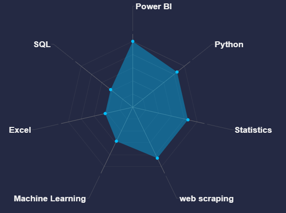

Overview
我是一位來自台灣的數據分析學習者，擁有心理學背景，並正積極轉職至數據工程與資料科學領域。我熱愛探索資料背後的意義，擅長從複雜的資訊中萃取出清晰、有價值的洞見。
我的學術背景來自清華大學教育心理與諮商學系，透過修習心理學、認知心理學、心理統計與研究方法等課程，培養了我對人類行為與認知的理解，也奠定了我日後進行數據分析的邏輯思維與統計基礎。
目前，我專注於資料科學與數據工程的學習，並完成專題實作，內容包含使用 Python、PowerBI、SQL 進行爬蟲、資料清理與探索性分析，利用 Power BI 進行視覺化呈現，並具備基本的機器學習與資料庫應用能力。我曾參與 Coursera 的 Google Data Analytics 課程與政府開辦的數據分析職訓課程，也在 Kaggle 平台實作與學習進階技術。
我相信結合人文理解與技術能力，可以更深入地分析資料與解決真實世界的問題。我正在尋找能夠實踐所學並持續成長的機會，目標是成為一位能結合數據工程與分析的全方位資料科學家。
- Languages: Python, SQL ,DAX
- Python: Pandas, NumPy, Matplotlib, Seaborn, SciPy, BeautifulSoup, Selenium, sklearn
- SQL: Create, Alter, Insert, Select, Update, Merge, Drop, Delete, Joins, Temp Tables,, Aggregate Functions(GROUP BY, COUNT ,SUM...)
- Excel: Pivot tables, formulas (V-Lookup and others), conditional formatting, and charting
- Databases: SQL Server
- BI Tools: Power BI (desktop & service), DAX , and PowerQuery
- Other: AWS (尚需學習)
技能雷達圖

當前技能加強規劃
- SQL：透過 LeetCode 刷題強化查詢邏輯，並逐步學習 Azure 中的資料服務（如 Azure SQL、Data Factory 等）。
- 機器學習：深入學習時間序列分析與深度學習模型，補足高階建模能力。
- Power BI：熟練 DAX 函數應用，並提升查詢效能與報表優化技巧。
Education
清華大學: 教育心理與諮商學系, 畢業於2022年1月
彰化師範大學: 人力資源管理碩士 2022年9月 - 2024年1月